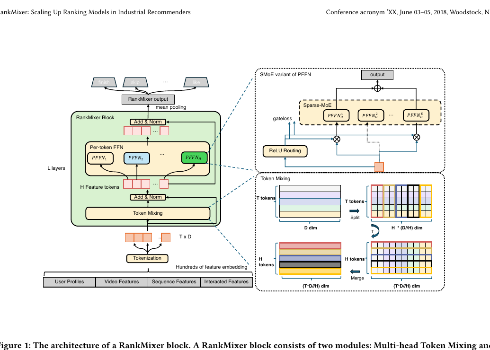
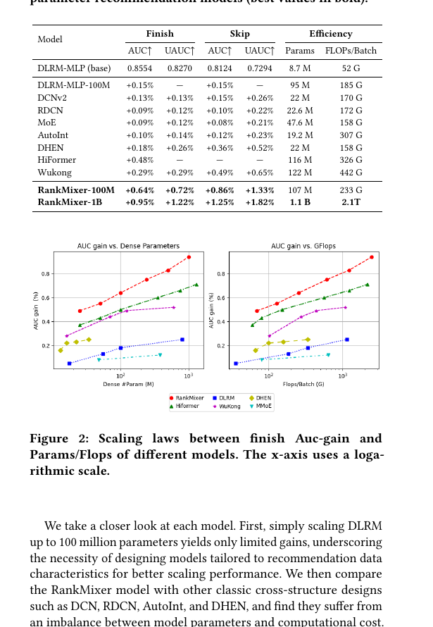
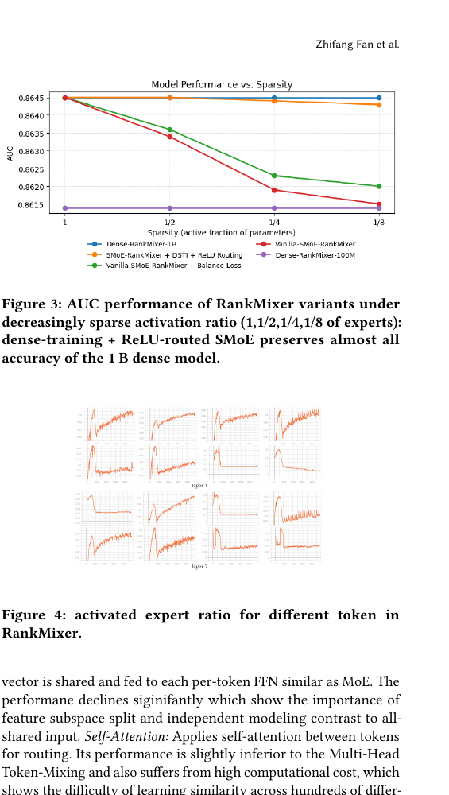
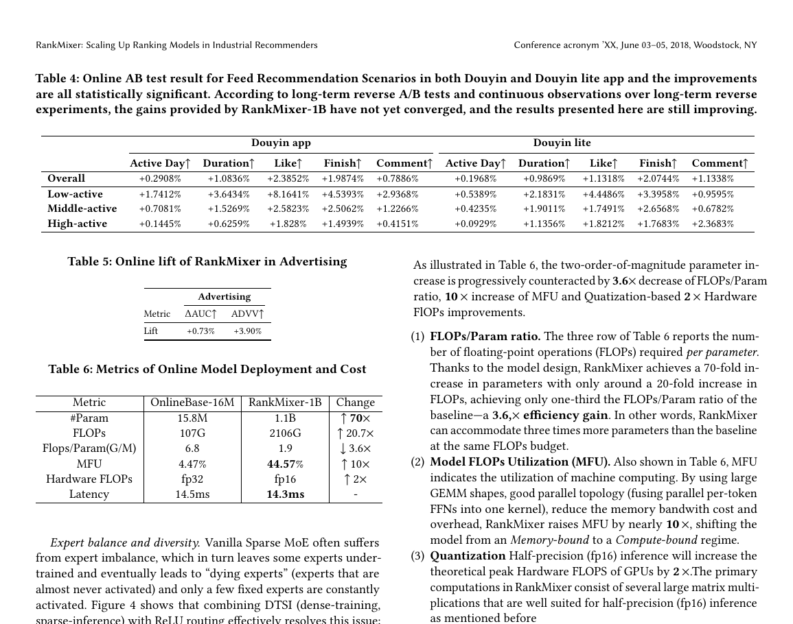
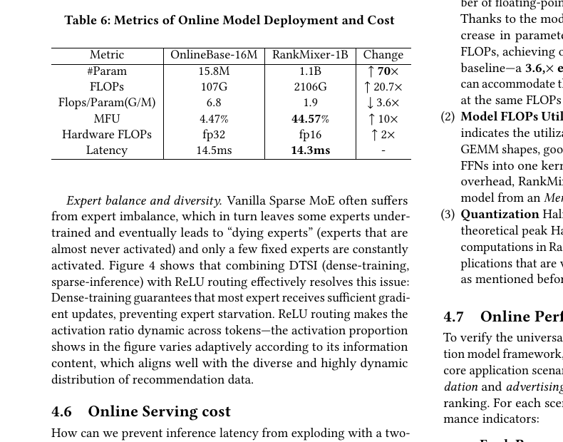

RankMixer
1. 基本信息
- 标题：RankMixer: Scaling Up Ranking Models in Industrial Recommenders
- 作者：Jie Zhu, Zhifang Fan, Xiaoxie Zhu, Yuchen Jiang, Hangyu Wang 等，ByteDance
- 时间：2025
- 链接：https://arxiv.org/abs/2507.15551
- 关键词：Scaling Laws、Ranking Model、Recommender System
- pdf位置：
C:\Users\chaol\Desktop\推荐论文阅读\scaling\rankmixer.pdf - 笔记位置：
论文笔记/精排/模型扩展/RankMixer.md - 分类：精排 / 模型扩展
1.1 相关论文
- OneTrans：把 RankMixer 擅长的 non-seq tokenization / token-specific parameter 思路进一步并入统一的 sequence + feature interaction backbone。
- UniMixer：直接后续/对照工作，把 RankMixer/TokenMixer 的规则 token mixing 解释为可参数化 permutation-like mixing，并在主结果与 scaling curve 中把 RankMixer 作为最强基线。
- HyFormer：同样想把长序列建模与异构特征交互统一起来，但走的是 query-centric 的交替结构，而不是 RankMixer 这种 token mixing 主导路线。
2. 一句话总结
这篇论文想解决的不是“推荐模型还能不能更大”，而是“在工业推荐严格的延迟和 QPS 约束下，排序模型怎样才能真正 scale up”。作者给出的答案是：不要继续堆 CPU 时代遗留下来的低 MFU 异构特征交叉模块，而是重新设计一个更适合 GPU 并行、又保留特征交互能力的统一骨干网络 RankMixer，再结合 Sparse-MoE、动态路由和工程优化，把线上排序模型从千万级参数扩到 10 亿级，同时基本不增加推理延迟。
3. 论文在解决什么问题
3.1 背景
工业推荐里的 ranking 模型已经有很多特征交叉结构，例如 MLP、DCN、Attention、DHEN 等，但这些方法有一个共同问题：它们大多是围绕“怎么做更复杂的 feature crossing”设计出来的，而不是围绕“怎么在现代 GPU 上高效扩展”设计出来的。
作者认为，推荐排序和 NLP/CV 不一样，工业场景有两个硬约束：
- 线上成本约束强：必须满足很低延迟和极高 QPS，不能像大模型那样只追求效果。
- 旧式交叉模块不适合 GPU：很多结构是 memory-bound，而不是 compute-bound，导致 GPU 并没有被真正吃满，MFU 很低，扩模型的 ROI 很差。
所以问题不只是“模型结构是否有效”，而是：
- 能不能设计一个统一的 ranking backbone；
- 既能表达 heterogeneous feature interaction；
- 又能把参数规模做大；
- 还不会把线上 serving 成本一起拉爆。
3.2 作者的核心判断
这篇论文背后的思考非常清晰：
- 推荐系统确实也应该 obey scaling law，但前提是模型结构要先适合扩展。
- 真正限制工业 ranking scale up 的，未必是参数本身，而是
参数 -> FLOPs -> 实际延迟这条链路没被打通。 - 如果一个模型能同时做到：
- 参数增长比 FLOPs 增长更快；
- FLOPs 增长比真实 latency 增长更慢；
- GPU 的 MFU 足够高；
4. 方法总览
4.1 整体结构
RankMixer 的整体结构很像一个为推荐系统重新设计过的 Transformer backbone。输入端先把大量 heterogeneous features 做 embedding，然后通过 tokenization 变成若干语义 token；中间堆叠 L 层 RankMixer block；最后做 mean pooling，输出给多个任务头。

每个 RankMixer block 只有两个核心部件：
- Multi-head Token Mixing
- Per-token FFN
作者还进一步把 Per-token FFN 扩展成 Sparse-MoE 版本，用来继续提升参数规模与收益比。
4.2 为什么先做 tokenization
推荐系统的输入不是统一语义空间里的词 token，而是用户、物品、交叉特征、序列特征等异构信息，embedding 维度也可能不同。如果直接“一特征一 token”，token 数会太多，每个 token 分到的参数和计算都太碎，既不利于建模，也不利于 GPU 并行；但如果 token 太少，又会退化成普通 DNN，不再保留不同语义子空间。
因此作者采用了一个折中设计：按语义把特征分组，然后拼接，再切成固定维度的 token。这样每个 token 不再对应单个 feature，而是对应一个“语义相近的 feature cluster”。在我的理解里，这一步相当于先把推荐系统里很散的 feature world 压缩成少量、较粗粒度、可并行处理的 token world，为后续统一 backbone 做准备。****
5. RankMixer 为什么这样设计
5.1 Multi-head Token Mixing：不用 Attention，而是做 token 重组
作者认为，自注意力在 NLP 中有效，是因为 token 之间共享统一 embedding space，点积相似度是有意义的；但推荐场景里的 token 来自不同 feature subspace，用户侧 ID、物品侧 ID、上下文统计量、行为序列的语义空间并不统一，直接做内积相似度未必合理，而且 attention 还会带来额外的计算、显存和 memory IO 开销。
所以 RankMixer 没有沿用 self-attention，而是提出了 Multi-head Token Mixing：
- 先把每个 token 切成
H个 head； - 对同一个 head 位上的所有 token 做重新拼接；
- 得到新的 mixed tokens；
- 再加残差和 LayerNorm。
这个操作本质上是在做一种 参数无关的跨 token 信息交换。它不像 attention 那样去学 token-token 相似度，而是直接让不同 token 的子空间信息发生重组。作者的立场很明确：在 heterogeneous recommendation features 上，这种简单直接的 mixing 比 self-attention 更适合，也更省。
这里有一个很容易卡住的维度问题，论文里虽然提到了，但笔记里也应该明确写出来：为什么 Token Mixing 后还能和输入做残差相加？输入形状是 T × D，而 mixing 后表面上看是 H × (T·D/H)，好像维度变了。关键在于作者专门设置了 H = T，于是输出就变成：
也就是说，Token Mixing 本质上是在做一种重排和重组，而不是改变 block 的最终张量尺寸。正因为输出重新回到了 T × D，所以才能直接做：
如果 H \neq T，那就不能直接残差相加，除非再额外接一层投影把维度对齐。作者把 H = T 固定下来，既是为了残差连接成立，也是为了让整个 block 结构保持干净，不需要额外的对齐层。
5.2 Per-token FFN：每个 token 一套独立参数
这是我觉得论文里最关键的设计之一。
传统 Transformer 的 FFN 是所有 token 共享一套参数；但作者认为，推荐系统里的 token 本来就代表不同语义子空间，如果还共用 FFN，那么高频、强势特征很容易压制长尾或低频特征，造成“跨空间支配”问题。
于是 RankMixer 改成了 Per-token FFN：每个 token 都有自己的 FFN 参数。这样做有两个直接效果：
- 表达能力变强：参数显著增多；
- 计算复杂度不变：因为每个 token 仍然只过自己的两层 MLP，总 FLOPs 级别没有本质变化。
论文中特别强调，它和 MMoE 也不一样。MMoE 是多个 expert 看同一个输入，而 RankMixer 是“不同 token + 不同参数”同时拆开，这更像是在显式保护不同 feature subspace 的建模独立性。
5.3 Sparse-MoE：继续放大参数，但不按传统 Top-k 路由来做
作者在更大规模上又发现，单纯把 Per-token FFN 换成普通 Sparse-MoE 也不行，原因有两个：
- uniform top-k routing 不合理：所有 token 都激活相同数量的 expert，浪费预算，也无法体现 token 重要性差异。
- expert under-training：Per-token FFN 本来就把参数按 token 拆散了，再叠加不共享 expert，专家总量会爆炸，导致路由极不均衡，一些 expert 基本学不到东西。
为了解决这个问题，论文提出两个配套设计：
- ReLU Routing：不用
Top-k + softmax，而是让每个 token 经过 ReLU gate，自适应决定激活多少专家，再用L1正则控制平均激活比例。信息量大的 token 可以激活更多 expert，信息量小的 token 少激活一些。 - Dense-training / Sparse-inference (DTSI)：训练时用更 dense 的路由，让 expert 得到充分训练；推理时只用 sparse 路由，保证线上成本。
这两个设计合在一起，本质是在解决一个工业 Sparse-MoE 常见难点：既要专家足够多来撑参数规模，又不能让专家训练失衡，更不能把线上推理成本拉爆。
5.4 扩展方向
论文把 RankMixer 的扩展轴概括为四个：Token 数 T、宽度 D、层数 L、专家数 E。对 dense 版本，参数和 FLOPs 近似满足：
作者实验里观察到一个和 LLM 很像的现象：性能主要和总参数量相关，而不是强依赖某一种扩展方式。也就是说，增宽、增深、增 token 数都能带来接近的收益；但从计算效率看，增宽会形成更大的 GEMM shape，更容易把 GPU 跑满，因此最终选择了偏“宽而浅”的配置：
RankMixer-100M:D=768, T=16, L=2RankMixer-1B:D=1536, T=32, L=2
这也再次说明作者不是单纯追求模型表达力，而是在表达力和硬件效率之间找平衡。
6. 实验是怎么证明这套思路有效的
6.1 实验设置
离线实验来自抖音推荐系统的生产数据，包含 300 多个特征，覆盖数十亿 user ID、上亿 video ID，每天数据量达到 trillion 级，实验使用两周数据。评估指标既看效果，也看效率：
- 效果：Finish/Skip 的 AUC、UAUC
- 效率：Dense 参数量、FLOPs、MFU
这个设置很重要，因为论文的主张不是“离线指标稍微更高”，而是“在真实工业算力约束下能不能更值得 scale”。
6.2 和 SOTA 的对比
在相近参数规模下，RankMixer 的表现明显更强。

对比表里最关键的信息有两层：
-
100M 量级时，RankMixer-100M 效果已经超过其他强 baseline
- Finish AUC
+0.64% - Finish UAUC
+0.72% - Skip AUC
+0.86% - Skip UAUC
+1.33%
- Finish AUC
-
继续放大到 1B 后，收益还在持续变大
- Finish AUC
+0.95% - Finish UAUC
+1.22% - Skip AUC
+1.25% - Skip UAUC
+1.82%
- Finish AUC
作者借这组实验说明了两件事：
- 单纯把 DLRM 直接堆到 100M，收益很有限，说明推荐模型不是“参数大就自然有效”。
- RankMixer 在参数和 FLOPs 之间的平衡更好，所以它的 scaling 曲线更陡、更稳定。
6.3 Scaling law：为什么作者说它更适合 scale
Figure 2 展示了不同模型的 AUC gain 随参数规模、FLOPs 增长的曲线，RankMixer 的曲线最陡。这意味着相同的参数增加或相同的计算增加，RankMixer 都更容易把它们转化成效果收益。
论文里对其他方法的判断也很值得记一下：
DLRM-MLP：直接堆大，收益有限。DCN / RDCN / AutoInt / DHEN：参数和计算不平衡，FLOPs 上去很快。HiFormer：效果不错，但 attention 和更细粒度 token 划分影响效率。Wukong：参数扩展也能涨效果，但 FLOPs 涨得更快，ROI 不如 RankMixer。普通 MoE：专家不平衡，scale 效果不理想。
所以作者的论点不是“我们比所有模型都更聪明”，而是“我们这个结构最适合把工业推荐的 scale potential 真正兑现出来”。
6.4 消融实验：哪些模块是关键
论文的消融结果比较直观：
- 去掉 residual connection：
-0.07% - 去掉 layer normalization：
-0.05% - 去掉 multi-head token mixing：
-0.50% - 把 per-token FFN 改成 shared FFN：
-0.31%
这里最有信息量的是后两项，说明：
- Token mixing 确实承担了跨 token 的全局交互功能，不是一个可有可无的小技巧。
- Per-token FFN 确实在保护不同 feature subspace 的独立建模能力。
论文还专门对比了几种 routing 方式，结果表明 self-attention 虽然只略差一点，但参数多 16%、FLOPs 多 71.8%，性价比明显不如 token mixing。这其实再次呼应了整篇论文的核心取向：工业 ranking 里，高性价比的交互方式比“更通用的大一统算子”更重要。
6.5 Sparse-MoE：为什么它能继续往上扩

Figure 3 和 Figure 4 对应 Sparse-MoE 的核心结论：
- 结合
DTSI + ReLU Routing后，即使 expert 激活比例越来越低，AUC 也几乎不掉。 - 相比之下，vanilla Sparse-MoE 一旦稀疏起来，性能下降明显。
- Figure 4 还说明不同 token 的 expert 激活比例是动态变化的，这正符合推荐数据分布高度异质、不同 token 信息量差异很大的特点。
作者给出的结论是，这套设计让 RankMixer 能在 几乎不损失效果 的情况下把参数容量再放大 8x+，同时带来 50%+ 的吞吐改善，为继续向 10B 级别扩展留下空间。
7. 线上结果与工程解释
7.1 在线效果

线上 A/B 测试覆盖了两类核心场景：Feed Recommendation 和 Advertising。
Feed 推荐里，RankMixer-1B 在 Douyin 主 App 的整体收益为：
- Active Day
+0.2908% - Duration
+1.0836% - Like
+2.3852% - Finish
+1.9874% - Comment
+0.7886%
而且低活用户收益更大，例如主 App 的低活用户：
- Active Day
+1.7412% - Duration
+3.6434% - Like
+8.1641% - Finish
+4.5393%
广告场景里也有：
ΔAUC +0.73%ADVV +3.90%
这说明 RankMixer 并不是只对某个特定 ranking 任务有效，而是作为统一 backbone 在不同 personalised ranking 场景下都能 work。
7.2 为什么 1B 参数没有把线上延迟打爆
这是整篇论文最“工程价值”也最高的部分。
作者把延迟拆成下面这个式子：
也就是说，参数规模变大不一定直接等于延迟变大，中间至少还有三个调节杆：
- FLOPs/Param ratio 下降
- MFU 上升
- 硬件理论 FLOPs 提升（例如 fp16 / quantization）

论文里给出的对比很有冲击力：
- 参数量：
15.8M -> 1.1B，约70x - FLOPs：
107G -> 2106G，约20.7x - FLOPs/Param：
6.8 -> 1.9，下降3.6x - MFU：
4.47% -> 44.57%，提升近10x - 硬件 FLOPs：
fp32 -> fp16，再提升2x - 最终 latency：
14.5ms -> 14.3ms
也就是说，虽然参数确实放大了两个数量级，但：
- 模型结构让“每个参数平均对应的计算成本”下降了；
- 大 GEMM 和更好的并行拓扑把 GPU 利用率拉起来了；
- fp16/量化进一步放大吞吐；
最终把参数增长对延迟的压力抵消掉了。这正是论文标题里 “Scaling Up Ranking Models in Industrial Recommenders” 最关键的落地点。
8. 我的理解与启发
8.1 这篇论文真正的创新点不只是一个新 block
如果只看结构，RankMixer 可以被理解成 “token mixing + per-token FFN + sparse MoE”。但如果只把它当成一个新网络模块，会低估这篇论文。
它真正重要的是提出了一套 hardware-aware 的 ranking scale-up 方法论：
- 先承认推荐系统也需要 scaling；
- 但不照搬 NLP 的 self-attention；
- 而是根据推荐特征异构、线上 latency 敏感、GPU 并行需求高这些现实条件，重新设计交互骨干。
8.2 这篇论文为什么不迷信 Attention
很多推荐论文喜欢把更强的 attention 当成默认升级方向，但作者这里实际上做了一个很“克制”的判断：如果 feature space 本身是 heterogeneous 的，attention 的相似度假设就未必成立。
这点我觉得非常值得记住。推荐系统里的很多 token 不是词，也不是 patch，它们之间不是天然共享一个统一语义空间，所以并不一定越像 Transformer 越好。RankMixer 选择了更朴素但更贴场景的 token mixing，本质上是一种“不要让通用架构绑架任务结构”的思路。
8.3 工业推荐里的 scale，不只是模型问题，也是系统问题
这篇论文给人的另一个很强烈的感觉是：推荐系统的 scaling law 必须和 serving law 一起看。
如果一个模型 offline AUC 很好，但 MFU 很差、memory-bound、线上延迟不可控，那它在工业里并不是真的能 scale。RankMixer 把结构设计、路由设计、kernel 并行形态、量化这些因素一起考虑，说明工业 ranking 大模型不是单靠算法论文里的 block 创新就能落地的。
9. 结论
RankMixer 的核心贡献可以概括成一句话：把推荐排序模型从“手工异构交叉模块的拼装体”变成了一个可统一扩展、可高效并行、可工业落地的大规模 backbone。
它解决的问题非常实际：
- 不是只追求更高离线指标；
- 而是在工业延迟和 QPS 约束下，把参数规模、效果收益和线上成本真正解耦。
从结果看，这篇论文最强的证据不是单点离线指标，而是下面这组组合拳：
- 离线 scaling law 更陡；
- 稀疏 MoE 还能继续扩；
- 主推荐和广告都涨；
- 70 倍参数增长下 latency 基本不变。
如果后面我再回看这篇论文，我会重点记住三个点：
- heterogeneous feature interaction 不一定适合 self-attention
- Per-token parameter isolation 是推荐场景里很有价值的 inductive bias
- 工业 ranking 的 scale-up，必须同时优化结构、路由、MFU 和 serving